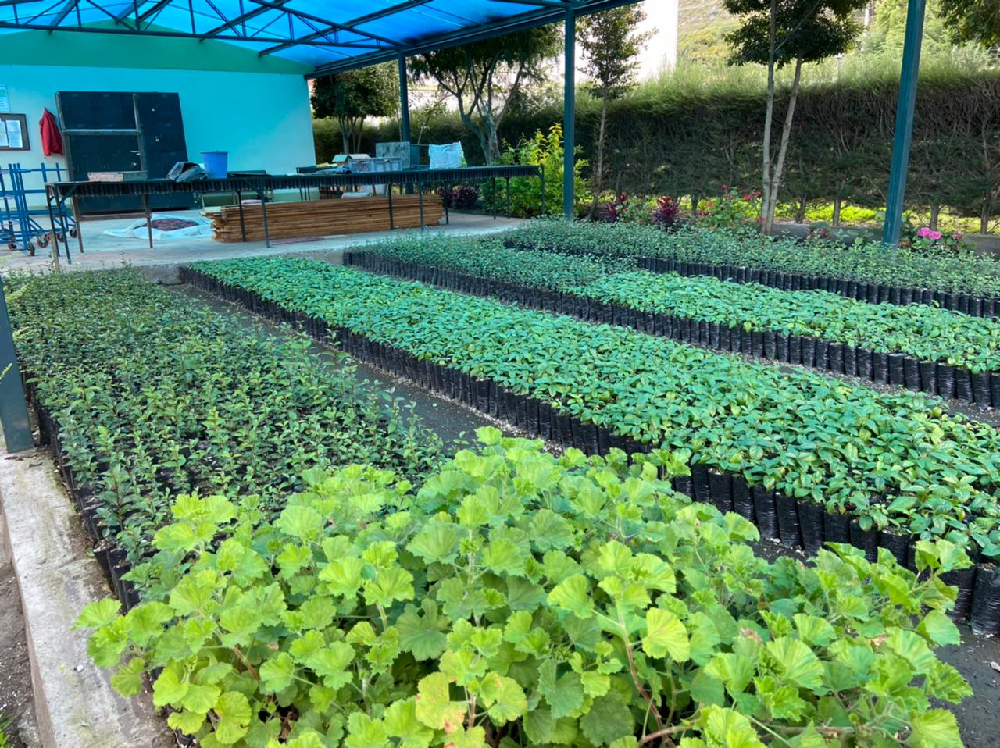

Galeria Imagenes
la belleza de una planta proviene de sus raíces
Servicios
Servicio 1
Servicio 2
Servicio 3


Presentamos a continuación información que el vivero catiglata ofrece a su disposición, contamos con una gran variedad de plantas de diferentes especies y separadas en grupo, además proporcionamos imágenes de las plantas. Entre los diferentes grupos de plantas podemos encontrar plantas forestales, plantas ornamentales, plantas medicinales y plantas de jardín. También colocamos una galería de fotos para que se pueda ver la descripción de cada planta. Esperamos disfrute observando y conociendo sobre todo lo que ofrece este hermoso vivero y sus bellas e increíbles plantas.